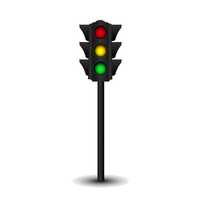
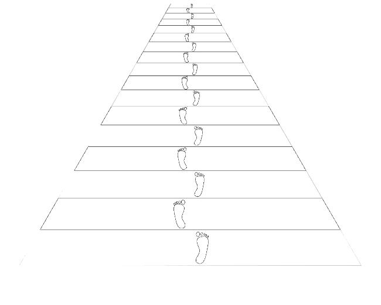
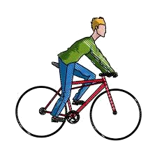
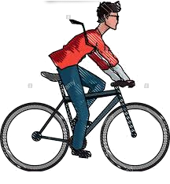
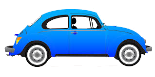
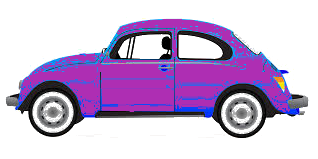
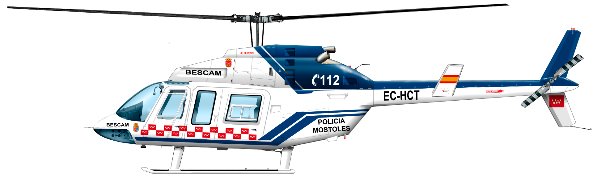
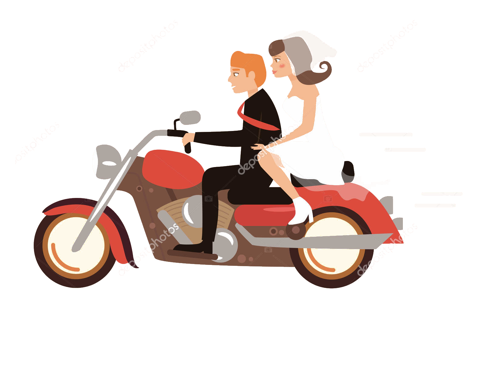

Reglamento editado por la Dirección General de Tráfico
(con la colaboración del IES Mar de Cádiz)








CAPÍTULO 11
Ciclos, vehículos de tracción animal y tranvías
Artículo 22.
Ciclos y bicicletas
Los ciclos, para poder cir-
cular, deberán disponer
de: un sistema adecuado
de frenado que actúe so-
bre las ruedas delanteras
y traseras. Un timbre,
prohibiéndose el empleo
de otro aparato acústico
distinto de aquél.
Además, para circular de
noche por tramos de vías
señalizados con la señal
de «túnel» 0 cuando exis-
tan condiciones meteoro-
lógicas o ambientales que
disminuyan sensiblemen-
te la visibilidad. los ciclos.
exceptuando las bicicle-
tas, deberán disponer de:
Luz de posición delan-
tera y trasera.
catadióptricos traseros
y laterales no triangu-
lares.
Catadióptricos en los
pedales.
s ICIC e as y as ICl-
cletas con pedaleo asisti-
do corresponderán a tipos
homologados, según la re-
glamentación que se reco-
e en el anexo l.
Las bicicletas. para circu-
lar de noche por tramos
de vías señalizados con la
señal de «túnel» o cuando
existan condiciones me-
teorológicas o ambienta-
les que disminuyan sensi-
blemente la visibilidad,
deberán disponer de los
siguientes dispositivos:
Luz de posición delantera
y trasera, catadióptrico
trasero, y podrán disponer
de: catadióptricos en los
radios de las ruedas y en
los pedales.
Todos los dispositivos a
que se refiere el presente
artículo estarán homolo-
gados de acuerdo con la
reglamentación que se re-
co e en el anexo I.
Los ciclos y bicicletas no
podrán arrastrar remolque
o semirremolque alguno.